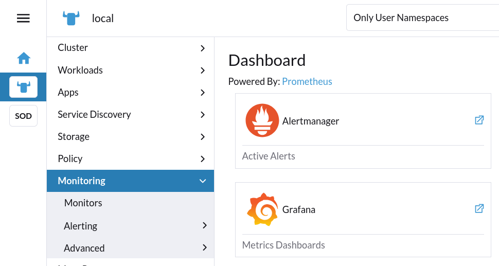
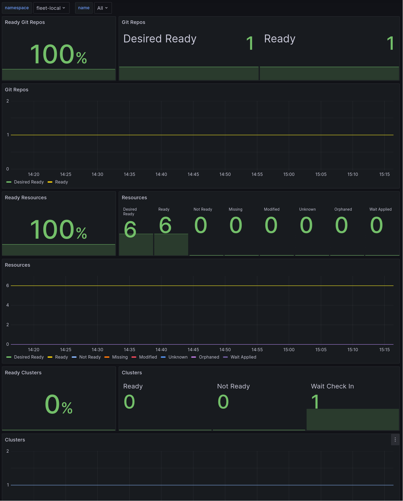
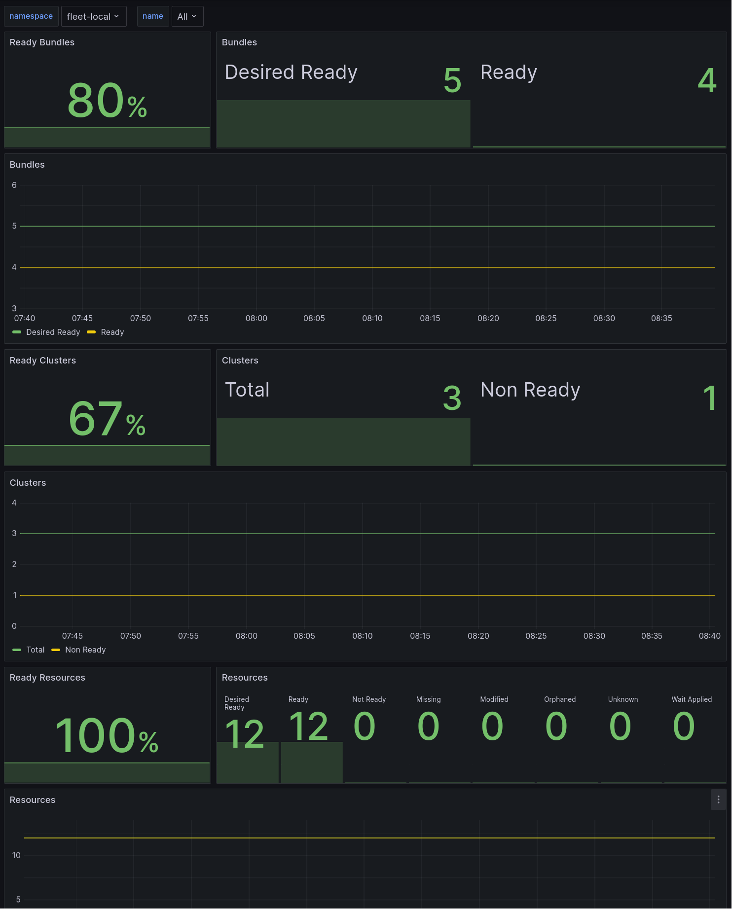
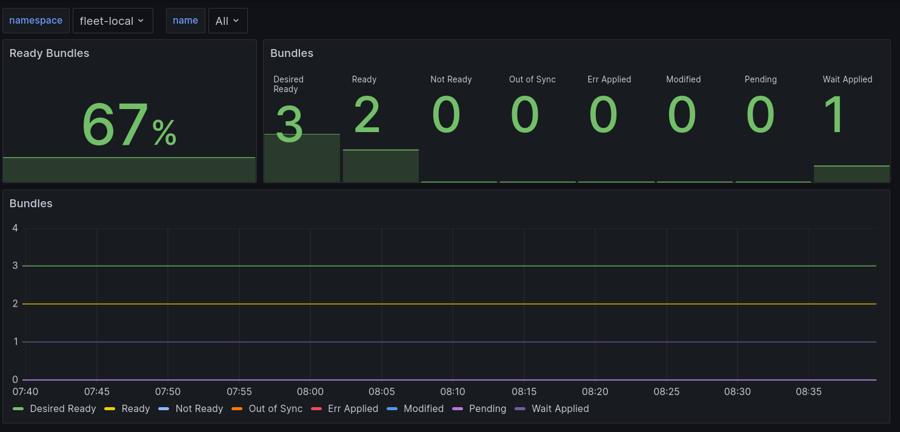
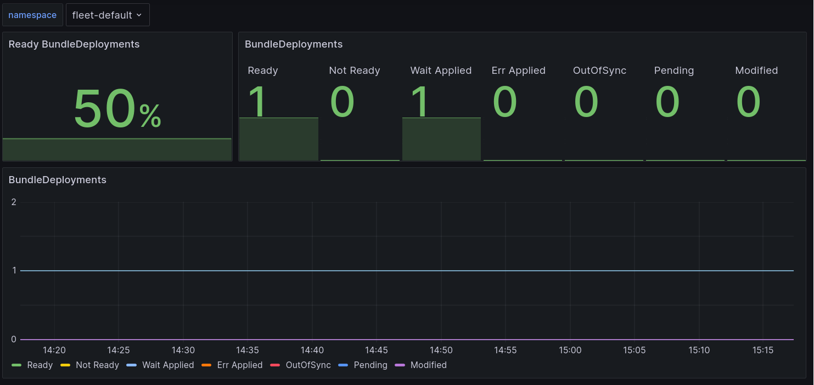
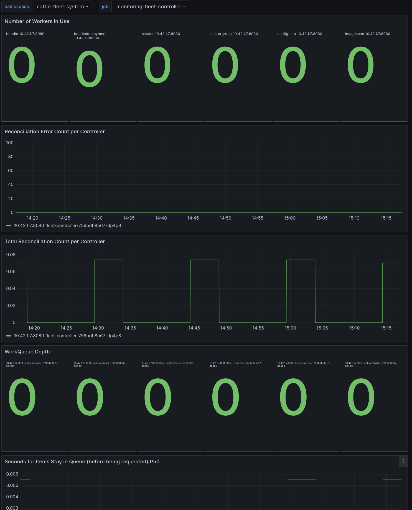
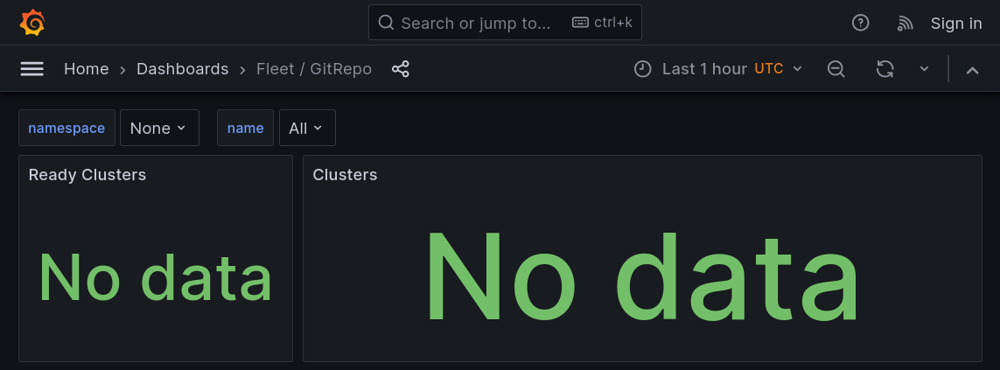
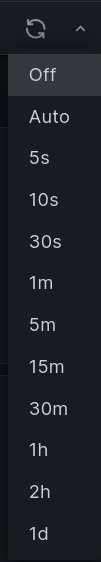

Fleet Dashboards
for Support
Patrick Seidensal <pseidensal@suse.com>
Table of Contents
- Installation
- Where to Find the Dashboards?
- Dashboard Organization
- Tour of Dashboards
- Troubleshooting
- Questions
Installation
Just install the rancher-monitoring chart on the local cluster.
Where to Find the Dashboards?
Currently, only in Grafana Where to Find the Dashboards?
Embedding into Rancher UI WIP
-
Proposal
-
Resulting Rancher Dashboard issue
-
UI/UX issue
Dashboard Organization
Tour of Dashboards
- GitRepo
- Bundle
- BundleDeployment*
- Cluster
- ClusterGroup
- Controller-Runtime*
*Not to be embedded in Rancher UI
GitRepo

Cluster
ClusterGroup
Bundle
BundleDeployment
Controller Runtime
Building Dashboards
Troubleshooting
Troubleshooting
Data Flow
Troubleshooting
Username and Password
admin/prom-operator
kubectl get secret\
-n cattle-monitoring-system rancher-monitoring-grafana \
-o jsonpath='{$.data.admin-password}' | base64 -dDashboard X doesn't show data
Troubleshooting
Dashboard X doesn't show data
- Just installed?
- Wait for Prometheus to be configured (can take a few minutes!)
- Wait for the data to be scraped (takes a few seconds)
- Metrics will only appear if the corresponding resource is created, e.g. GitRepo
Troubleshooting
Dashboard X doesn't show data
- Check the configured time range
Troubleshooting
Dashboard X doesn't show data
- Refresh the dashboard

Troubleshooting
I don't see any data
- Check the data source in Grafana
- Check the configured scrape targets in Prometheus
- Check the ServiceMonitor resource
- Check the Fleet service
- Check the Fleet controller
Troubleshooting
I don't see any data
Check the data source in Grafana
Troubleshooting
I don't see any data
Check the configured scrape targets in Prometheus
Troubleshooting
I don't see any data
Check the ServiceMonitor resource
$ kubectl get smon -n cattle-fleet-system
NAMESPACE NAME AGE
cattle-fleet-system monitoring-fleet-controller 6d21h
cattle-fleet-system monitoring-gitops-controller 6d21h
$ kubectl get -n cattle-fleet-system \
smon monitoring-fleet-controller -o yaml
apiVersion: monitoring.coreos.com/v1
kind: ServiceMonitor
metadata:
annotations:
meta.helm.sh/release-name: rancher-monitoring
meta.helm.sh/release-namespace: cattle-monitoring-system
creationTimestamp: "2024-07-30T11:03:32Z"
generation: 1
labels:
app.kubernetes.io/instance: rancher-monitoring
app.kubernetes.io/managed-by: Helm
app.kubernetes.io/part-of: rancher-monitoring
app.kubernetes.io/version: 104.1.0_up57.0.3
chart: rancher-monitoring-104.1.0_up57.0.3
heritage: Helm
release: rancher-monitoring
name: monitoring-fleet-controller
namespace: cattle-fleet-system
resourceVersion: "7790"
uid: 8c973d43-43d2-4981-8b38-f0fe5ad53ec6
spec:
endpoints:
- metricRelabelings:
- action: replace
replacement: local
sourceLabels:
- __address__
targetLabel: cluster_id
- action: replace
replacement: local
sourceLabels:
- __address__
targetLabel: cluster_name
port: metrics
jobLabel: fleet
selector:
matchLabels:
app: fleet-controller
kubectl get -n cattle-fleet-system \
smon monitoring-gitops-controller -o yaml
apiVersion: monitoring.coreos.com/v1
kind: ServiceMonitor
metadata:
annotations:
meta.helm.sh/release-name: rancher-monitoring
meta.helm.sh/release-namespace: cattle-monitoring-system
creationTimestamp: "2024-07-30T11:03:32Z"
generation: 1
labels:
app.kubernetes.io/instance: rancher-monitoring
app.kubernetes.io/managed-by: Helm
app.kubernetes.io/part-of: rancher-monitoring
app.kubernetes.io/version: 104.1.0_up57.0.3
chart: rancher-monitoring-104.1.0_up57.0.3
heritage: Helm
release: rancher-monitoring
name: monitoring-gitops-controller
namespace: cattle-fleet-system
resourceVersion: "7792"
uid: 0458e787-42b5-4057-ba1c-b3c49aee9a3f
spec:
endpoints:
- metricRelabelings:
- action: replace
replacement: local
sourceLabels:
- __address__
targetLabel: cluster_id
- action: replace
replacement: local
sourceLabels:
- __address__
targetLabel: cluster_name
port: metrics
jobLabel: gitops
selector:
matchLabels:
app: gitjob
Troubleshooting
I don't see any data
Check the Fleet service
kubectl get -n cattle-fleet-system \
service monitoring-fleet-controller -o yaml
apiVersion: v1
kind: Service
metadata:
annotations:
meta.helm.sh/release-name: fleet
meta.helm.sh/release-namespace: cattle-fleet-system
creationTimestamp: "2024-07-30T10:59:40Z"
labels:
app: fleet-controller
app.kubernetes.io/managed-by: Helm
name: monitoring-fleet-controller
namespace: cattle-fleet-system
resourceVersion: "5121"
uid: 612d47dd-06f0-4a7f-99e1-b44aa6124460
spec:
clusterIP: 10.43.134.194
clusterIPs:
- 10.43.134.194
internalTrafficPolicy: Cluster
ipFamilies:
- IPv4
ipFamilyPolicy: SingleStack
ports:
- name: metrics
port: 8080
protocol: TCP
targetPort: 8080
selector:
app: fleet-controller
fleet.cattle.io/shard-default: "true"
sessionAffinity: None
type: ClusterIP
status:
loadBalancer: {}
kubectl get -n cattle-fleet-system svc \
monitoring-gitjob -o yaml
apiVersion: v1
kind: Service
metadata:
annotations:
meta.helm.sh/release-name: fleet
meta.helm.sh/release-namespace: cattle-fleet-system
creationTimestamp: "2024-07-30T10:59:40Z"
labels:
app: gitjob
app.kubernetes.io/managed-by: Helm
name: monitoring-gitjob
namespace: cattle-fleet-system
resourceVersion: "5113"
uid: 350503f8-9681-4b36-8a33-63fa5dcf66a6
spec:
clusterIP: 10.43.58.123
clusterIPs:
- 10.43.58.123
internalTrafficPolicy: Cluster
ipFamilies:
- IPv4
ipFamilyPolicy: SingleStack
ports:
- name: metrics
port: 8081
protocol: TCP
targetPort: 8081
selector:
app: gitjob
fleet.cattle.io/shard-default: "true"
sessionAffinity: None
type: ClusterIP
status:
loadBalancer: {}
Troubleshooting
I don't see any data
Check the Fleet controller
kubectl get -n cattle-fleet-system pod
NAME READY STATUS RESTARTS AGE
fleet-agent-0 2/2 Running 0 6d19h
fleet-controller-759bdb8b67-dp4p8 3/3 Running 3 (29h ago) 7d1h
gitjob-7dd55dfd8c-jrgt7 1/1 Running 1 (29h ago) 7d1h
Troubleshooting
I don't see any data
Disabled Monitoring
github.com/rancher/fleet/blob/main/charts/fleet/values.yaml#L76-L77
- No monitoring-.* services
- No exporters listening in Fleet & Gitjob controller
Troubleshooting
"Wrong" Data
- Dashboards reflect data in Fleet resources' status
- Not a Fleet dashboard but rather Fleet issue if Fleet resources show the same values in their status (and they are considered wrong)
Troubleshooting
Missing Data
- Monitoring collects data every X seconds
Outlook
- More dashboards
- Embedding into Rancher UI
- Alerts
- StackState
Questions?
Thank you!
You can find this presentation on